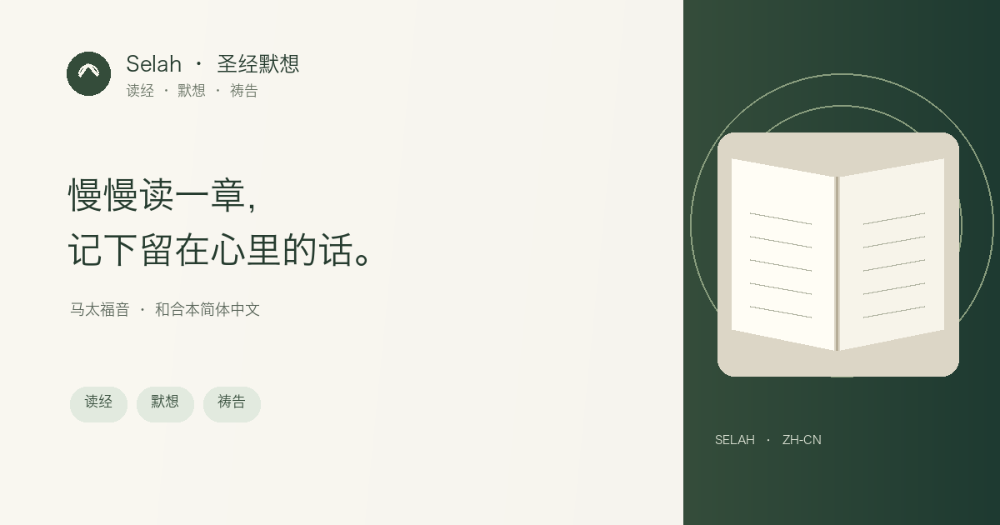

圣经阅读 · 默想 · 祷告笔记
慢慢读一章，把留在心里的话写下来。
Selah 是一款免费的圣经阅读与默想应用。从马太福音开始，使用1919年和合本简体版按章阅读，写下个人祷告与观察。
开始读马太福音无需注册即可开始；笔记默认保存在当前设备，登录 BlueCloud 后可跨设备同步。

在 Selah 里可以做什么
- 阅读马太福音 28 章，使用1919年和合本简体中文经文。
- 调整阅读字体和字号，让手机或电脑上的经文更易读。
- 保存自己的默想、祷告和复习测验；连接 BlueCloud 后可在设备间同步。
- 阅读经文后再看简短文章导读，不让其他内容打断读经。
- 分享经文链接时，你的私人默想和祷告不会一并分享。
不用赶进度，从一章开始
选择马太福音的一章，先完整读一遍，再回到让你停下来的词句。记下一件你从经文中看见的事，以及一个愿意带进今天的回应；几句话就够了。
无需注册即可阅读和记录，笔记默认保存在当前设备。登录同一个 BlueCloud 账户后，可在支持的设备间同步记录。
内置文本为1919年中文和合本简体版。Open Bibles 数据目录将该文本标为公有领域；不同地区的法律状态可能不同。此处不使用1988/2010年后续修订版。